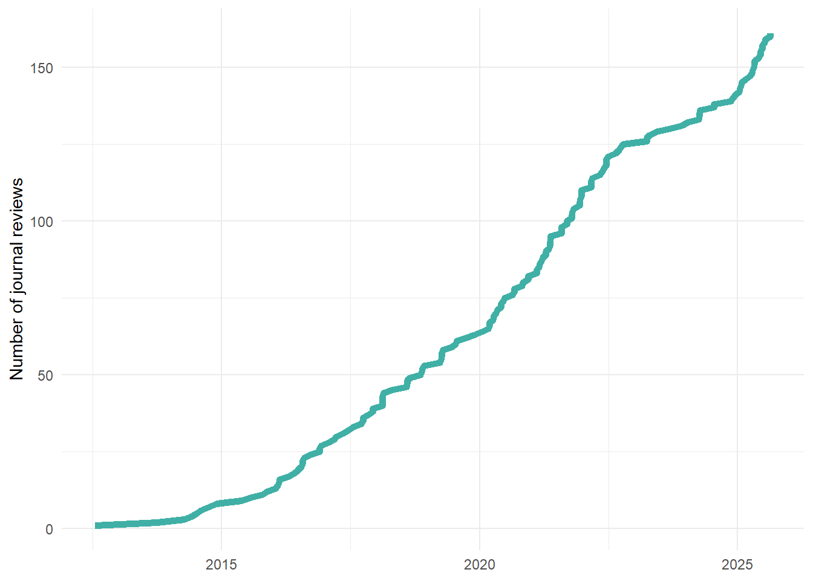

Like many academics, I spend some of my time reviewing submissions for academic journals, publishers, and funding bodies. I also like measuring things and keeping track of them, even if there’s no point in doing so.1 I think it can be useful to share this sort of information – no one really knows how much reviewing other people do, which makes it hard to know if you are doing a lot or a little of something. I have no idea if I do more or less reviewing than other people in my field, but in any case, here is a brief record of the review I have done during my career.
I reviewed my first paper for a journal in 2012, and since then I have reviewed 142 submissions for 46 different journals. That works out as about 11.4 reviews per year since I started reviewing, and 15.9 per year in the last five years.
Here’s a plot of how many reviews I’ve done over time:

And here are the ten journals I’ve reviewed for the most:
I’ve also reviewed seven book proposals for four different publishers, and six grant proposals for four different funding bodies.
I’m almost always happy to review things if they are related to things I know about, so if you’re looking for someone to review something, feel free to get in touch, especially if you’re a book publisher who’ll give me free books in return for a review. I love books.2
See also: keeping track of various metrics on my smart watch and my 700+ wine ratings on Vivino .
When my eldest daughter was born I kept track of things like feeding, naps, and sleep. Once I had enough data I tried to do some analysis to see what factors led to more sleep. Unfortunately it turns out babies are entirely random processes.↩︎
I worked in a bookshop for five years while I was a student, which has left me with the habit of buying more books than I will ever have time to read, something you will discover for yourself if you ever come to my house or office.
A couple of years ago I started pointless keeping track of the (non-work) books I read on the Story Graph, so if you want to know what I’ve been reading lately, take a look. Also feel free to talk to me about any of the books I’ve read!↩︎